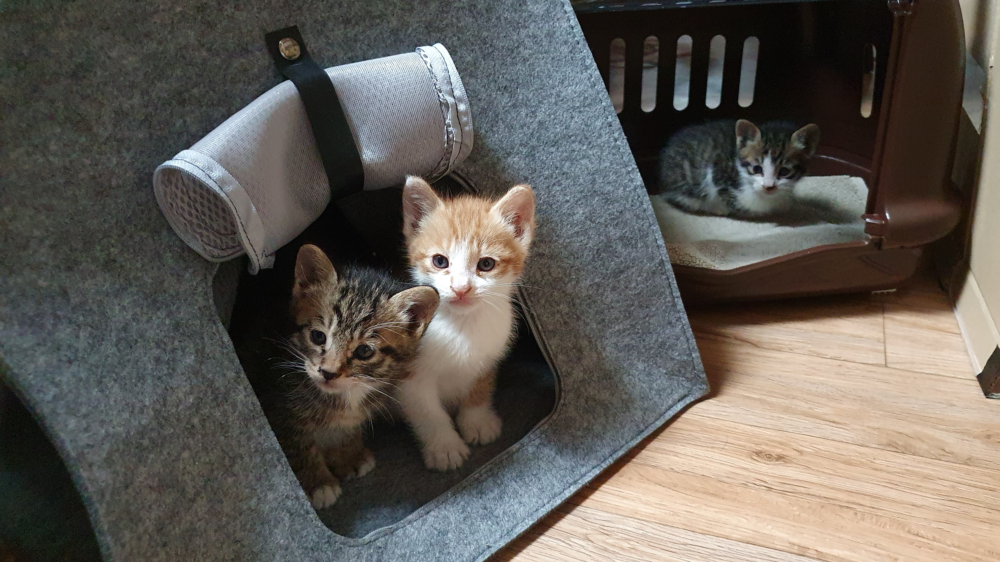

해달별

해달별은 코숏 삼형제 햇님, 달님, 별님이다. 2020년 4월생으로, 난이의 첫번째 자식들이다. 아파트 입구 옆 반지하 창고에서 태어난지 한 달쯤 되었을 때 데려왔다. 여동생(누나일지도)인 꽃님이도 있지만 중성화 이후 난이 밥을 챙겨주시던 아주머니 집으로 가게 되었다. 처음에 이름을 지을 때는 임시로 세 녀석의 이름을 연관성 있게 짓는다고 해, 달, 별을 붙였는데 각자한테 잘 어울려서 계속 그렇게 부르고 있다. 꽃님이는 엄마랑 둘이서 님자 돌림으로 붙인 이름인데 공교롭게도 꽃님이를 데려간 아주머니도 같은 이름을 붙였다고 한다(!).
처음 집에 왔을 때는 눈곱이 많이 끼는 등 가벼운 허피스/감기 증상이 있었다. 그리고 다리 등 피부 곳곳에 땜빵이 있었다. 하지만 그 외에는 건강한 편이었다. 햇님이는 데려올 때부터 집에 도착해서 몸을 닦아줄 때까지 눈에 초점이 없었다. 그래서 설마 생후 한 달간 햇빛을 보지 못 해서 시력에 문제가 있나 걱정했지만 몇 시간 뒤 멀쩡하게 돌아온 것으로 보아, 그냥 졸음에 취해있었던 것으로 밝혀졌다. 한편, 처음 며칠간 목소리도 전혀 듣지 못 해서 혹시나 관련 기관에 이상이 있나 싶었지만 가장 먼저 햇님이가 우렁차게 울었고 건강하다는 것을 확인했다. 다른 아이들 울음을 듣는 데까지는 시간이 좀 더 걸렸다.